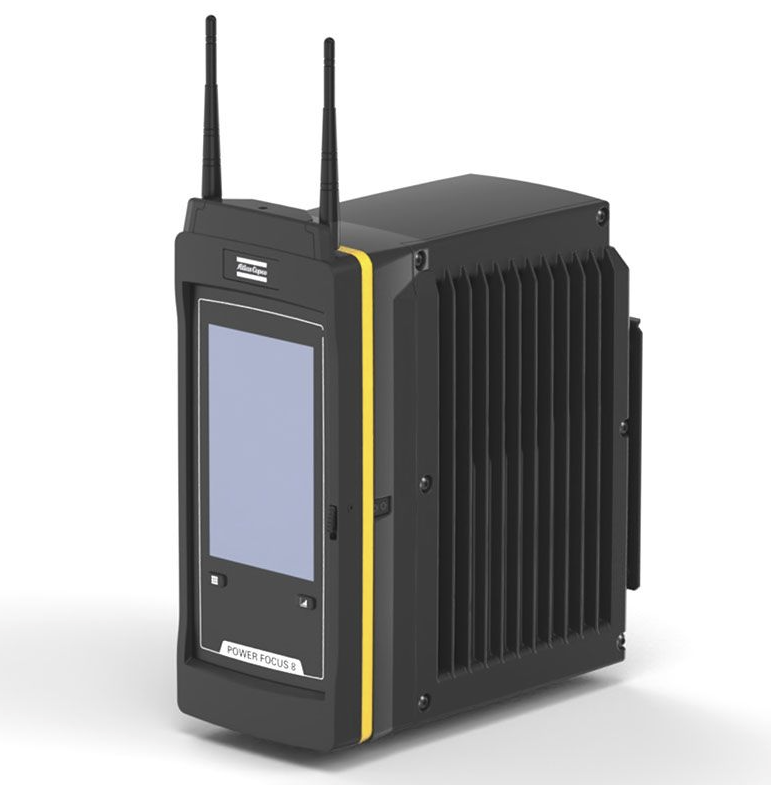

Atlas Copco Powerfocus 6/8 controllers and tools

{kind=link}
Installation and configuration
OGS project configuration
For generic information about how to configure OGS with OpenProtocol tools, see OpenProtocol documentation.
Tool registration and configuration
To use any OpenProtocol tools, the OPConn.dll module must be enabled in the station.ini configuration file under the [TOOL_DLL] section.
The PowerFocus controllers (and also the ITB tools with integrated controller) are identified by specifying the tool type PF6000 in the [OPENPROTO] section of station.ini.
A typical configuration of the [OPENPROTO] section looks like the following :
[OPENPROTO]
; Channel/Tool 1 parameters
CHANNEL_01=10.10.2.184
CHANNEL_01_PORT=4545
CHANNEL_01_TYPE=PF6000
; Enable time synchronization
CHANNEL_01_CHECK_TIME_ENABLED=1
; Force CCW switch selection for rework/loosen
CHANNEL_01_CCW_ACK=1
; Enable cyclic enable check
CHANNEL_01_CHECK_EXT_COND=1
; To enable curve transmission, set to 1:
; NOTE: requires a license!
CHANNEL_01_CURVE_REQUEST=0
The typical parameters are (for more details about the possible parameters, see OpenProtocol documentation):
CHANNEL_<channel>: Define the IP address used to communicate with the tool.CHANNEL_<channel>_TYPE: Defines the OpenProtocol communication variant, must be set toPF6000.CHANNEL_<channel>_PORT: (optional) Define the TCP port number used for OpenProtocol(typically 4545).CHANNEL_<channel>_CHECK_TIME_ENABLED: (recommended) If set to a nonzero value, then the tools internal time is synchronized with the OGS date and time.CHANNEL_<channel>_CCW_ACK: (optional) If set to a nonzero value, then the CCWSel switch is monitored for the correct position - i.e. if OGS expects loosen, the switch must be set to the CCW position.CHANNEL_<channel>_CURVE_REQUEST: Set to 1 to enable curve transmission over OpenProtocol, set to 0 to disable. Set to 1, if you need the curve data in OGS (e.g. for display or dynamic curve analysis with LUA scripting). Disable (set to zero), if you don't need it (for performance reasons or if you don't have a license).
Tool data output
See Tool data http output for more information about how to configure the tools built-in data output drivers.
Tool configuration
Firmware version
Please contact AtlasCopco for information about current firmware versions - it is recommended to use up-to-date firmware for compatibility, performance and security!
Configuration
See PF600 manual for details about how to configure the tightening controller and enable OpenProtocol.